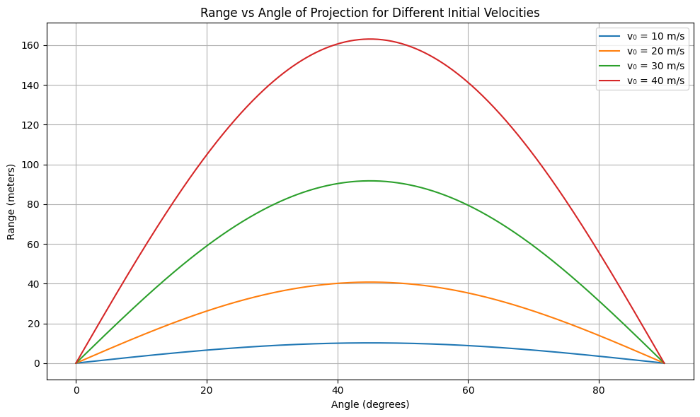

Problem 1
📘 Projectile Motion: Investigating Range as a Function of Angle
🎯 1. Theoretical Background
Projectile motion describes the motion of an object thrown into the air, subject only to gravitational acceleration.
🧮 Equations of Motion
The motion is broken into two components:
○ Horizontal (x-axis)
○ Vertical (y-axis)
Initial velocity components:
\(v_{0x} = v_0 \cos(\theta)\)
\(v_{0y} = v_0 \sin(\theta)\)
Position functions:
\(x(t) = v_0 \cos(\theta) \cdot t\) \(y(t) = v_0 \sin(\theta) \cdot t - \frac{1}{2} g t^2\)
⏱️ Time of Flight
For a projectile launched and landing at the same height:
\(T = \frac{2v_0 \sin(\theta)}{g}\)
📏 Horizontal Range
Using time of flight in the x-position:
\(R = v_{0x} \cdot T\)
\(R = \frac{v_0^2 \sin(2\theta)}{g}\)
Range is maximum when \(\theta = 45^\circ\) because \(\sin(2\theta)\) is maximum at \(90^\circ\).
📊 2. Detailed Python Simulation
💡 Objective
Simulate and visualize how the range changes with projection angle. Also show effects of varying initial speed and gravity.
import numpy as np
import matplotlib.pyplot as plt
# Define function to calculate range
def calculate_range(v0, g, angles_deg):
angles_rad = np.radians(angles_deg)
return (v0**2 * np.sin(2 * angles_rad)) / g
# Parameters
g = 9.81 # Earth gravity (m/s^2)
angles = np.linspace(0, 90, 500)
# Different initial speeds
v0_values = [10, 20, 30, 40]
plt.figure(figsize=(10, 6))
# Plot for each v0
for v0 in v0_values:
R = calculate_range(v0, g, angles)
plt.plot(angles, R, label=f'v₀ = {v0} m/s')
plt.title("Range vs Angle of Projection for Different Initial Velocities")
plt.xlabel("Angle (degrees)")
plt.ylabel("Range (meters)")
plt.grid(True)
plt.legend()
plt.tight_layout()
plt.show()
🔍 3. Parameters and Their Effects
| Parameter | Symbol | Effect on Range |
|---|---|---|
| Initial Velocity | $v_0$ | $R \propto v_0^2$ → Quadratic increase |
| Gravity | $g$ | $R \propto \frac{1}{g}$ → Inversely related |
| Angle | $\theta$ | $R \propto \sin(2\theta)$ → Max at $45^\circ$ |
🌐 4. Real-World Adaptations
🏔 Uneven Terrain
If the launch and landing heights differ (e.g., launched from a cliff or building), the vertical motion equation becomes:
💨 With Air Resistance
Introduce drag force: \(F_d = -kv\) (linear) or \(F_d = -kv^2\) (quadratic)
🚧 6. Limitations & Future Improvements
| Limitation | How to Improve |
|---|---|
| No air resistance | Add drag force and solve numerically |
| Constant gravity | Use variable $g(h)$ for high-altitude launches |
| Flat terrain | Model terrain using piecewise height functions |
| 2D only | Extend to 3D with azimuthal angle for full realism |
✅ Conclusion
Projectile motion is a powerful model that reveals deep physical insights using relatively simple mathematics. By changing angle, speed, and environment, we unlock a vast space of real-world applications — from sports to space science.
